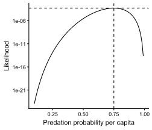

library(emdbook)
library(tidyverse)
data(ReedfrogPred)10 Likelihood
Use to estimate parameters, it is called a “goodness-of-fit metric” because it find out which parameters help the model to fit the data best.
\[\mathcal{L}(\theta | x) = \mathbb{P}(x | \theta)\]
Likelihood function is the probability of observing the data \(x\) given the model \(\theta\) (Bolker, 2008). Statisticians denote it as \(\mathcal{L}(\theta | x)\) to make clear that \(\theta\) is the variable we are solving for, while \(x\) remains fixed.
We want this probability to be maximum because it means this model makes the observed data is very high, that’s why people denote “maximum likelihood”.
When observations are independent, the joint likelihood of the whole data set is the product of the likelihoods of each individual observation. And if observations are identically distributed, we can write the likelihood as a product of similar terms:
\[\mathcal{L}(\theta) = \prod_{i = 1}^{n} f_Y(y_i| \theta)\]
For mathematical convenience, we almost always maximize the logarithm of the likelihood (log-likelihood) instead of the likelihood itself. Since the logarithm is a monotonically increasing function, the maximum log-likelihood estimate is the same as the maximum likelihood estimate.
\[log \mathcal{L}(\theta) = \sum_{i = 1}^{n} log \left[ f_Y(y_i| \theta) \right]\]
10.1 Estimate 1 parameter
We will use the ReedfrogPred dataset from the emdbook package. Variable surv records the number of tadpoles surviving for 16 weeks with and without predators (pred), among the total tadpoles density.
Let subset the data to get an example:
x <- subset(ReedfrogPred, pred == "pred" &
density == 10 & size == "small")
xRemember that Binomial distribution is use to estimate the probability of getting exactly \(k\) successes with success probability \(p\) in a sequence of \(n\) independent Bernoulli trials. We have a total of \(n\) = density tadpoles, where each tadpole has a success probability \(p\) of survive, and in each experiment we observe \(k\) = surv survived tadpoles. Hence the probability of observing \(k\) tadpoles survive is Binomial:
\[\mathbb{P}(X = k) = {N \choose k} p^k (1 - p)^{N - k}\]
In our example, we have \(n = 4\) observations (each row is an observation). The likelihood \(\mathcal{L}\) of observing 4 observations assuming these observations are independent is the product of 4 pmf of Binomial distribution:
\[\mathcal{L} = \prod_{i = 1}^{n} {N_i \choose k_i} p^{k_i} (1 - p)^{N_i - k_i}\]
In R we use dbinom() to get the pmf of Binomial distribution.
binomNLL1 <- function(p, k, N) {
-sum(dbinom(k, prob = p, size = N, log = TRUE))
}For example, at p = 0.7 we would have this negative log likelihood:
binomNLL1(p = 0.7, k = x$surv, N = x$density)[1] 7.817885We can plug all possible values of p and see how the likelihood looks like. Noted that to get the likelihood, we get the exponential of the negative of the negative log likelihood.
binomNLL_p <- Vectorize(binomNLL1, vectorize.args = "p")
# Plugs in p from 0.1 to 0.99
p_grid <- seq(0.1, 0.99, by = 0.01)
res <- binomNLL_p(p = p_grid, k = x$surv, N = x$density)
df_plot <- data.frame(p = p_grid, lik = exp(-res))The maximum likelihood is at:
max_lik <- df_plot |>
slice_max(lik)
max_likVisualise the likelihood curve:
ggplot(df_plot, aes(x = p, y = lik)) +
geom_line() +
geom_vline(xintercept = max_lik$p, linetype = "dashed") +
geom_hline(yintercept = max_lik$lik, linetype = "dashed") +
scale_y_log10() +
labs(x = "Predation probability per capita", y = "Likelihood") +
theme_classic()
We can use the optim() function to numerically find this:
o1 <- optim(fn = binomNLL1, par = c(p = 0.5), N = 10, k = x$surv, method = "BFGS")
o1$par p
0.7499998 exp(-o1$value)[1] 0.0005150149The mle2() in the bbmle package provides a “wrapper” for optim() specifically for parameter optimisation. mle2() assumes that the objective function is a negative log-likelihood function.
library(bbmle)Loading required package: stats4
Attaching package: 'bbmle'The following object is masked from 'package:dplyr':
slicem1 <- mle2(minuslogl = binomNLL1, start = list(p = 0.5), data = list(N = x$density, k = x$surv))
m1
Call:
mle2(minuslogl = binomNLL1, start = list(p = 0.5), data = list(N = x$density,
k = x$surv))
Coefficients:
p
0.7499998
Log-likelihood: -7.57 10.2 Estimate 2 parameters
data(MyxoTiter_sum)We will use the MyxoTiter_sum dataset, which studied the virus concentrations titer in the skin of rabbits. We’ll choose a Gamma distribution to model these continuously distributed, positive titer. Let’s take grade 1 virus as an example.
myxdat <- subset(MyxoTiter_sum, grade == 1)
head(myxdat)Same as before, we need the negative log-likelihood function for Gamma distribution.
gammaNLL1 = function(shape, scale) {
-sum(dgamma(
myxdat$titer,
shape = shape,
scale = scale,
log = TRUE
))
}10.3 Starting values
If you know the theoretical values of the moments (mean and variance) of a distribution and the sample values of the moments. There is a simple way to estimate the parameters of a distribution, called the method of moments: just match the sample moments up with the theoretical moments.
For example, in a normal distribution \(\mathcal{N}(\mu, \sigma^2)\), the parameters are \(\mu\) and \(\sigma^2\). Theoretical moments are mean \(\mu\) and variance \(\sigma^2\). With your sample, you can calculate the sample moments mean \(\bar{x} = \sum x/N\) and variance \(s^2 = \sum(x - \bar{x})^2/N\). Match the sample values up with the theoretical values:
- \(\mu = \bar{x} = \sum x/N\)
- \(\sigma^2 = s^2 = \sum(x - \bar{x})^2/N\)
For a more complicated example, a negative binomial distribution \(NB(r, p)\), the theoretical moments are mean \(\mu = \frac{r(1 - p)}{p}\) and variance \(\sigma^2 = \frac{r(1 - p)}{p^2}\). Match the sample values up with the theoretical values:
\[\begin{align} \mu &= \bar{x} \\ \Leftrightarrow \frac{r(1 - p)}{p} &= \bar{x} \\ \Leftrightarrow r &= \frac{\bar{x}p}{1 - p} \end{align}\]
\[\begin{align} \sigma^2 &= s^2 \\ \Leftrightarrow \frac{r(1 - p)}{p^2} &= s^2 \\ \Leftrightarrow \frac{\bar{x}p}{(1 - p)} \cdot \frac{1 - p}{p^2} &= s^2 \\ \Leftrightarrow \frac{\bar{x}}{p} &= s^2 \\ \Leftrightarrow p &= \frac{\bar{x}}{s^2} \end{align}\]